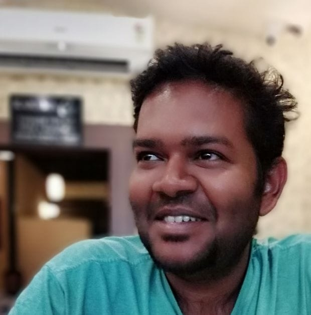

EpySTEM Project
Early draft. Website under development.
What is EpySTEM Project?
EpySTEM Project is a set of courses that will teach you Python programming for your needs from the very basics. Presently, there are beginner courses for (1) high school students, classes 6 to 12, who are aspiring to be engineers and scientific researchers, and (2) Biological researchers who want to learn Python programming to augment their research, or need mentorship or consultation on their own research projects.
MODE OF INSTRUCTION
- Online session once a week: Presentation and demonstration, live coding, example problem solving.
- I will provide detailed pdf documents and jupyter notebooks for you to follow.
- Material will contain many examples to learn from, and exercises to practice.
- The student will take the time to read the material and practice the examples and exercises.
- Student's doubts and questions will be addressed over instant messaging or email.
- Occassionally I will send articles and blogs relevant to all STEM fields and general knowledge for light reading.
ADVANTAGES OF THIS PROGRAM
- Introduce new tools into the learning process.
- Ability to explore a vast problem space.
- Understand concepts at a deeper more fundamental level.
- Include programming in the student's toolkit and skill set.
- Increase curiosity and ability to ask new questions.
- Improve problem solving ability using algorithmic thinking.
- Learning made fun.
- Satisfies both curricular and extra-curricular activities.
- Low stress and personal mentorship and support.
- Active learning through doing, rather than passive learning through consuming.
ABOUT ME
I am a scientific researcher and educator. I am passionate about teaching young minds, and to inspire them and guide them towards excellence. With this course I want to ignite their curiosity and show them the way towards technological superiority through Mathematics, Physics, and Computer programming. I wish to nurture these young minds towards a higher understanding of the subjects from a fundamental and conceptual point of view. Thus becoming familiar with the scientific method at a younger age, brings perspective and wisdom at an earlier stage in life when the mind is more receptive and has a higher potential for learning.
Education
- Ph.D. in Experimental Physics from Indian Institute of Science, Bangalore.
- M.Sc. Physics from University of Pune.
- B.Sc. (Hons) Physics St. Xavier's College, Kolkata.
- ICSE and ISC from Don Bosco school, Kolkata.
Achievements
- Winner of State Level Computer Quiz (Birla Industrial and Technological Museum).
- Ranked in UGC-CSIR-NET Examination.
- Published research in Nature communications and other international journals.
- Participated in several international conferences.
Teaching Career
- Taught IIT JEE Physics at premier private school.
- Mentored few research assistants during PhD.
- Taught experimental Physics for Undergraduate course at IISc.
- Tutored several students for their board examinations.
Interests
- Teaching and education
- Science, technology, engineering.
- Computer programming, Artificial Intelligence
- Music composition
- Philosophy
INTRODUCTION TO THE COURSE
- The invention and evolution of computers began more than a century ago.
- Physicists invented the computer using Physics to solve Physics problems.
- Initially computers cost millions of dollars, and existed in few research institutes and universities.
- Early computers were very difficult to use and program.
- Over time, Mathematicians invented better and simpler languages to make programming computers easy for everybody.
- Thus Physics, Mathematics, and computer technology are inherently tied together.
- Countless inventions and discoveries and technological advancements have been made possible by computers.
- Now the computer is ubiquitous, everybody has one, and programming languages are much simpler.
- Computers make our lives easier and there is large untapped potential.
HIGH SCHOOL SCIENTIFIC PROGRAMMING CURRICULUM
- Fundamentals of Mathematics and Physics, through Python programming.
- Develop algorithmic thinking.
- Design virtual experiments using various physical concepts.
- Explore the solution space of several topics.
- Gather data from these experiments.
- Plot graphs and visualize the data
- 2D and 3D plots.
- Build interactive animations to observe time evolution of systems.
- Numerous projects of many topics:
- Optics
- Electronics
- Mechanics
- Thermodynamics
- ...and more
- Cryptography
- Automatically collecting data from the internet
- Signal processing
- Image analysis
- Technical and scientific writing
PYTHON PROGRAMMING FOR BIOLOGISTS
- Basics of procedural programming.
- Operations, expressions, statements.
- Conditional branching.
- Loops and Iterations.
- Functions and modules.
- Basic data structures.
- Pandas
- Read, clean, organize large amounts of data.
- Perform statistical analysis.
- Matplotlib and seaborn
- Scatter plot, line plots.
- Violin plots, box plots.
- Bar graphs, histograms, pie charts.
- Heat map plots.
- Surface plots, contour plots, 3D volumetric plots.
- Various other important libraries and modules
- biopython
- scipy
- scikitlearn
- etc...
- Scripting and Automation
WHY PYTHON?
- Currently most popular programming language for science, engineering, AI, and others.
- Very easy to learn. Beginner friendly.
- Very expressive and condensed. Easy for humans to read.
- Versatile tool for all purposes.
- Constantly evolving, will remain relevant in future.
WHO IS THIS COURSE FOR?
- If you are in classes 6-8, this course is ideal for you.
- If you are in class 9 or 11, you have less pressure of boards on your head.
- If you are in class 10 or 12, and you are eager to take on the challenge.
- If you are aspiring for entrance examinations like IIT JEE.
- If you love Physics, or Mathematics, or Engineering disciplines.
- If you are eager to learn programming.
- If you seek a career in engineering or scientific research.
- If you need extra help with fundamental concepts in Physics and Mathematics.
If you are a student wishing to enrol for the course, talk to your parents and ask them to contact me.
If you are a parent and think this course might benefit your child, please contact me.
If you are in Biological research fields, you need this course immediately. Contact me at the earliest. If you are none of the above, and you are interested to learn Python programming for industry, we can discuss to see how I can help you. Contact me.
CONTACT ME
Contact me to know more details about the course and to register.
Send me a Whatsapp message at +91-9483709887.
Email me at <pythonphysicsteacher AT gmail DOT com >.
I will get back to you at the earliest.